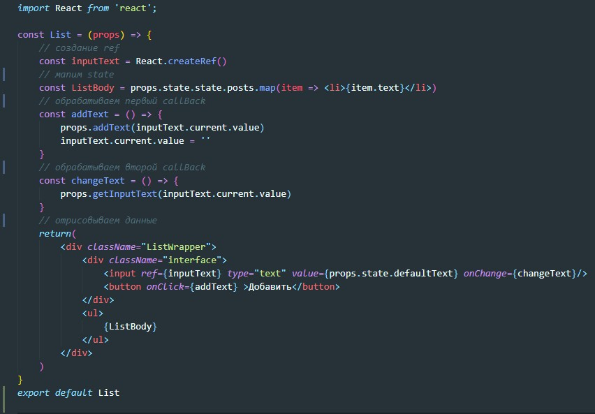

Есть два вида компонент
Презентационная компонента должна заниматься только тем, что отрисовывать JSX код. Эта компонента не должна значть о логике в store, она должна принимать в props фиксированные значения и передавать через CallBack функции значения которые получает из UI.
Контейнерная компонента наоборот имеет полный доступ к store и обеспечивает презентационную компоненту данными из store. Контейнерная компонента отрисовывает Презентационную? передавая ей через props только необходимые данные.
Оборачивать нужно только те компоненты где происходит какая-то логика (ввод текста в поля ввода, нажатия на кнопки)
Рассмотрим пример:
Здесь, согласно схеме мы должны прокинуть до Container весь store. Затем Container внутри создать CallBack функции которые прокинем в компонент вместе со state. Вот как выглядит сейчас файл Index.js
Далее в App.js мы прокидываем store в Container
Теперь в Container мы разбиваем store на составляющие и передаем в компонент List только то что ей надо
Компонент List ничего не получает от store, все необходимые данные пришли из Container, остается только их отрисовать и передать значения в CallBack. Компонент понятия не имеет что этот CallBack делает
